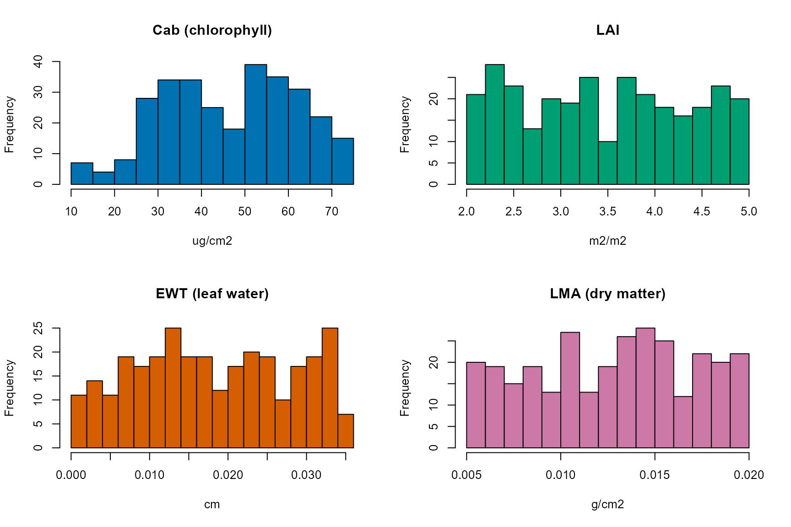
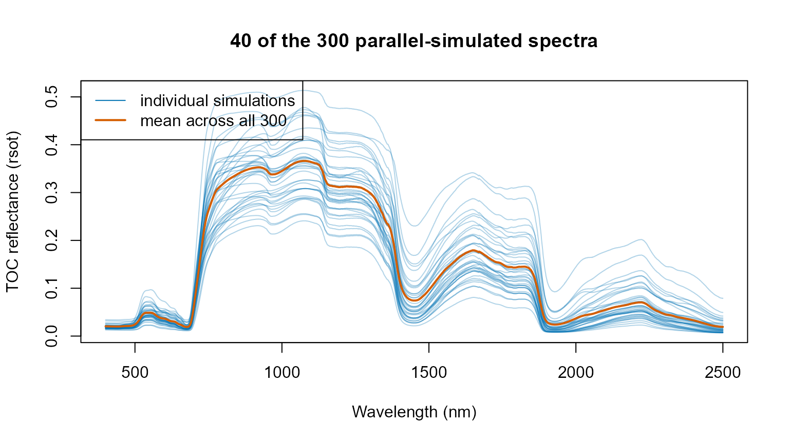

06. Large-Scale and Parallel RTM Simulation
t06-parallel-simulation.Rmd
library(ToolsRTM)
library(doParallel)
library(foreach)Every simulation so far used a plain sapply()/loop over
LUT rows – fine for hundreds of rows, slow for thousands. This page
shows the doParallel/foreach pattern this
package’s own course scripts use
(Scripts/R/ForPROSAIL/1-GetSimulationsLUTs.R) to distribute
simulations across CPU cores.
This whole page is forward simulation, not
inversion. Every LUT row below is a set of known
leaf/canopy traits fed into foursail() to produce
a spectrum; nothing here goes the other way (spectrum -> trait).
Parallelizing that direction, at scale, is the only subject of this
tutorial – inversion (traits recovered from spectra) is
Tutorials 11-13’s subject, using LUTs built the same way as here.
1. Build a LUT
n.samples <- 300
LUT <- as.data.frame(getLUT(inputs = ToolsRTM::inputsPROSAIL, nLUT = n.samples, setseed = 1234))
# inputsPROSAIL's own LMA row is held fixed at 0 by design -- getLUT()
# samples Prot/CBC instead (the dry-matter inputs PROSPECT-PRO uses). This
# page simulates with LeafModel="PROSPECT-D" below, which needs LMA
# directly, so sample it from a typical real-leaf range (0.005-0.02 g/cm2).
set.seed(1235)
LUT$LMA <- runif(n.samples, 0.005, 0.02)
rsoil <- rep(0.15, 2101)What’s actually varying across these 300 rows
op <- par(mfrow = c(2, 2))
hist(LUT$Cab, breaks = 20, col = "#0072B2", main = "Cab (chlorophyll)", xlab = "ug/cm2")
hist(LUT$LAI, breaks = 20, col = "#009E73", main = "LAI", xlab = "m2/m2")
hist(LUT$EWT, breaks = 20, col = "#D55E00", main = "EWT (leaf water)", xlab = "cm")
hist(LUT$LMA, breaks = 20, col = "#CC79A7", main = "LMA (dry matter)", xlab = "g/cm2")
par(op)This is the actual sampled input space foursail() runs
over below – not just a row count. getLUT() draws each
trait independently from inputsPROSAIL’s own documented
ranges/distributions (Tutorial 01).
2. Sequential baseline
t_seq <- system.time({
sims_seq <- lapply(seq_len(n.samples), function(i) {
sail_i <- foursail(inputLUT = LUT[i, ], rsoil = rsoil, LeafModel = "PROSPECT-D")
sail_i$rsot
})
})
cat("Sequential:", round(t_seq[["elapsed"]], 2), "s for", n.samples, "simulations\n")
#> Sequential: 8.5 s for 300 simulations3. Parallel with doParallel/foreach
no_cores <- max(1, parallel::detectCores() - 2)
# CRAN check machines cap parallel workers at 2; respect that limit so this
# vignette rebuilds cleanly under R CMD check --as-cran.
if (nzchar(Sys.getenv("_R_CHECK_LIMIT_CORES_"))) no_cores <- min(no_cores, 2L)
cl <- makeCluster(no_cores)
registerDoParallel(cl)
t_par <- system.time({
sims_par <- foreach(i = 1:n.samples, .packages = "ToolsRTM") %dopar% {
sail_i <- foursail(inputLUT = LUT[i, ], rsoil = rsoil, LeafModel = "PROSPECT-D")
sail_i$rsot
}
})
stopCluster(cl)
cat("Parallel (", no_cores, "cores):", round(t_par[["elapsed"]], 2), "s for", n.samples, "simulations\n")
#> Parallel ( 10 cores): 5.14 s for 300 simulations
cat("Speedup:", round(t_seq[["elapsed"]] / t_par[["elapsed"]], 2), "x\n")
#> Speedup: 1.65 xThree things matter for this pattern to actually work, not just look parallel:
-
makeCluster()/registerDoParallel()/stopCluster()always paired – an unclosed cluster leaks worker processes across the whole R session, compounding if this chunk runs more than once (e.g. re-knitting interactively). -
.packages = "ToolsRTM"insideforeach()– each worker process starts fresh, with no packages attached; without this,foursail()isn’t found on the workers and every iteration errors. -
no_cores <- detectCores() - 2, notdetectCores()itself – leaves headroom for the OS and this R session’s own main process, a convention this package’s own course scripts (ForPROSAIL,Sensibility) use throughout.
identical(sims_seq[[1]], sims_par[[1]]) # same result, sequential or parallel
#> [1] TRUEThe simulations themselves
wave <- 400:2500
spectra_mat <- do.call(rbind, sims_par)
matplot(wave, t(spectra_mat[sample(seq_len(n.samples), 40), ]), type = "l", lty = 1,
col = adjustcolor("#0072B2", alpha.f = 0.3),
xlab = "Wavelength (nm)", ylab = "TOC reflectance (rsot)",
main = "40 of the 300 parallel-simulated spectra")
lines(wave, colMeans(spectra_mat), col = "#D55E00", lwd = 2)
legend("topleft", c("individual simulations", "mean across all 300"), col = c("#0072B2", "#D55E00"), lty = 1, lwd = c(1, 2))
This is what the parallel run in Section 3 actually produced – the
spread across the 300 curves is a direct consequence of the trait
histograms above, not noise: every curve is one specific, known
(Cab, LAI, EWT, LMA, ...) combination run forward through
foursail().
4. When parallel is (and isn’t) worth it
cat("Per-simulation cost: sequential", round(1000 * t_seq[["elapsed"]] / n.samples, 2),
"ms, parallel", round(1000 * t_par[["elapsed"]] / n.samples, 2), "ms\n")
#> Per-simulation cost: sequential 28.33 ms, parallel 17.13 msfoursail() itself is fast (milliseconds per call) – the
parallel speedup above has to overcome the fixed overhead of starting a
cluster and shipping ToolsRTM/data to every worker, so it
only pays off once n.samples is large enough (thousands,
not hundreds) or each simulation is individually expensive
(e.g. SPART()’s atmosphere calculations, Tutorial 03; the
full SCOPE energy balance, covered in the SCOPEinR package’s own
tutorials). For a few hundred rows, the sequential
lapply()/sapply() used throughout Tutorials
01-05 is often simpler and not meaningfully slower once cluster startup
is accounted for.
5. Filtering non-finite rows
Large parallel runs sometimes include a few unstable simulations
(e.g. Liberty’s leaf solver, Tutorial 02, near the edges of its own
parameter range) that come back as NaN rather than erroring
outright. Always check before using the results downstream:
spectra_mat <- do.call(rbind, sims_par)
ok <- apply(spectra_mat, 1, function(r) all(is.finite(r)))
cat(sum(!ok), "of", n.samples, "simulations were non-finite and would be dropped.\n")
#> 0 of 300 simulations were non-finite and would be dropped.
spectra_mat <- spectra_mat[ok, , drop = FALSE]
LUT_ok <- LUT[ok, ]